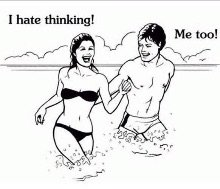

Those stinkin’ thoughts.
Mean. Repetitive. Non-stop.
Stop that! Do it right! That’s bad! Look out! Don’t you ever learn? Don’t do that! Be normal! What are you DOing? Boy you suck at this! Try harder! Be good!
Ensnaring us in, well…. something.
They feel like they’re coming at us. They feel like they’re aiming for us.
Like bird-poop bombs.
Guess who’s the target.
So unfriendly. So unfair and wrong.
Naturally, in order to be saved from this constant attack upon our innocent selves, we want different thoughts, changed thoughts, nicer, less stressful thoughts. And while we’re asking, can we have please more space between them too?
Or better yet, no thoughts at all.
Yeah that’s what we want. No thoughts at all.
But no. We’ve got ‘em. Or rather, they have us.
Because clearly we don’t own them. Too many people have the same ones.
So they must be community property.
Maybe if we can just figure out what we did to cause the constant barrage, we can stop the constant shirt-smearing. And we can figure out how to handle it when they land on us (which is usually), and how to meditate them away, or how to inquire for new and improved thoughts.
So of course we analyze them. What’s IN this poop?
Because they feel like they happen to us.
Boom. We’re placed. Anchored. Identified.
We're the center point.
The ones under all that poop.
There we are!
Thought locates the self.
Being the located, here-I-Am-the-victim-of-thoughts self, fending off all that attack…
Can make a person need a nap.
No wonder so many of us are pooped.
No pun intended. Ok maybe a little intended.
The thing is….
What if thoughts, whatever they are, are not happening to us?
What if they are us?
Which is different from being “identified” with them (whatever that means), or believing them, or determining if they’re correct,
Or even witnessing them, which locates us, still, as the watcher.
But rather, BEing thought.
As in it’s literally, actually, what we are.
Each thought, constantly changing, not located anywhere, not landing anywhere.
Happening. To no one.
It’s all us. It's all we. We are them.
Everywhere. Everything.
Well, then the target vanishes.
Then there's nothing to get free of. No enemy to dodge. No target to protect or save. Nothing to stop or fix.
Ah. Much less work. And much less Me to fuss over.
Which as it happens, is what so many Mind-Tickler readers have been looking for…
This lightening of the sense of self, this seeing the wispy transparency of the sense of Me.
Here it is.
Without having to beat thought into submission.
Which is lovely, since that beating hurts.
When instead we might discover that simply trying on, “What if I am this thought? And this one?”
Might, more easily,
Be far more
Of a direct hit
On what we really are.
Bulls-eye.
Click here to get your every week.
"It's all thoughts, which are nothing." --Robert Adams
